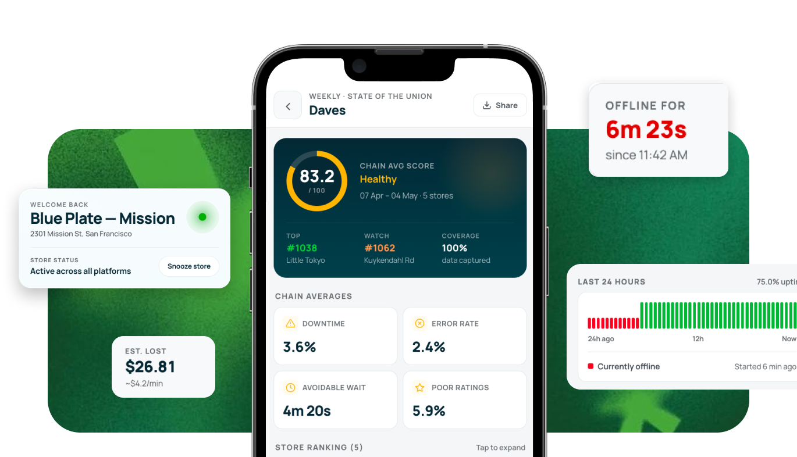
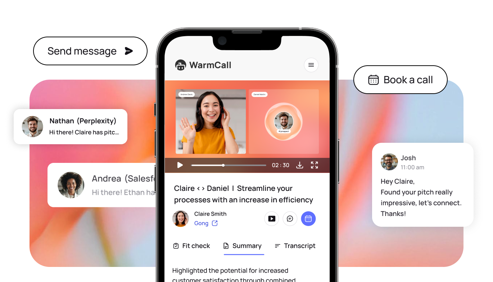

{kind=link}
What actually belongs on mobile?
I start with why someone would reach for their phone in the first place.
Across both products, that led to very different answers.
Loop → Urgency
Notice → Understand → Act
WarmCall → Accessibility
Watch → Interact → Respond
Loop — Operations don't wait for a desktop
Loop helps restaurant operators understand performance and act on their data.
Deep analysis belonged on desktop. But high-priority alerts, live operational status and quick AI interactions needed to reach operators wherever they were.
{kind=link}

Designed for quick intervention
Instead of bringing the entire Loop product to mobile, I focused on the moments where time mattered most: know what happened, understand why, and decide whether to act.
WarmCall — The pitch could be opened anywhere
WarmCall let sales reps create personalized AI video pitches for prospects. Creating them required focus — personalization, recording and reviewing all lived primarily on desktop (try the web prototype ↗).
{kind=link}

But consuming them was a different story.
Once a pitch was sent, a prospect could open it from an email, message or their phone.
So the mobile experience was designed around limited attention and immediate interaction — watch the pitch, understand its context and respond without needing another device.